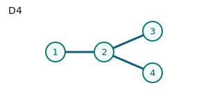
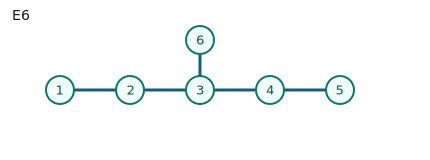

Ostrik ADE Modules¶
This page explains the graph picture behind Ostrik's classification for
SU(2)_k module categories, and how the package names/functions map to it.
0) Load packages¶
Main package:
LoadPackage("FusionRings");;
Optional graph toolkit inside GAP:
LoadPackage("grape");;
grape is not required for FusionRings itself. It is only for extra graph
operations/visual checks.
1) Notation bridge: paper vs GAP¶
- In Ostrik's paper, the category is written as
C_l(levell). - In this package we use the usual
SU(2)_knotation (levelk). - For this family, you can read
l = k.
In GAP, the ring side is created by:
md := VerlindeModularData("A", 1, k);;
F := FusionRingFromModularData(md);;
2) What is "the graph" here?¶
For a based module M over the fusion ring F, the fundamental simple object
(X_1) acts by a nonnegative integer matrix A. This is the nimrep adjacency
matrix, so it defines a graph.
For SU(2)_k, all action matrices are reconstructed by:
N_1 = I, N_2 = A, N_{j+1} = A*N_j - N_{j-1}.
That is exactly why one graph can reconstruct the whole module action in this family.
3) ADE statement (informal)¶
At fixed level k, irreducible module categories over SU(2)_k correspond to
ADE diagrams with Coxeter number h = k + 2:
A_{k+1}always,D_{k/2+2}for evenk,- exceptional:
E6atk=10,E7atk=16,E8atk=28.
4) APIs in this package¶
DynkinGraphAdjacency(type[, n])OstrikSU2Module(k, type[, n][, opts])OstrikSU2Modules(k)IsOstrikSU2Module(M, k[, type[, n]])FusionModuleGraph(M[, i])(graph data: vertices/edges/adjacency)
5) Quick examples¶
mods4 := OstrikSU2Modules(4);;
List(mods4, x -> x.type);
# [ "A", "D" ]
mods10 := OstrikSU2Modules(10);;
List(mods10, x -> x.type);
# [ "A", "D", "E6" ]
Validation check:
M := OstrikSU2Module(10, "E6");;
IsOstrikSU2Module(M, 10, "E6");
# true
6) Built-in graph data and visualization paths¶
A) In-package (text/records)¶
M := OstrikSU2Module(4, "D");;
g := FusionModuleGraph(M, LabelOfPosition(UnderlyingFusionRing(M), 2));;
g.mode;
g.edges;
This gives edges as triples [source, target, weight].
B) Visualize inside GAP via GRAPE¶
If GRAPE is installed (it is available in this environment), you can build a graph object from adjacency:
LoadPackage("grape");;
adj := DynkinGraphAdjacency("E6");;
G := Graph(Group(()), [1..Length(adj)], OnPoints,
function(x, y) return adj[y][x] <> 0; end, true);;
OrderGraph(G);;
IsConnectedGraph(G);;
C) Export to DOT (Graphviz)¶
You can print DOT from FusionModuleGraph and render with Graphviz:
M := OstrikSU2Module(4, "D");;
g := FusionModuleGraph(M, LabelOfPosition(UnderlyingFusionRing(M), 2));;
Print("digraph Nimrep {\n");
for e in g.edges do
Print(" \"", e[1], "\" -> \"", e[2], "\" [label=\"", e[3], "\"];\n");
od;
Print("}\n");
Then save as nimrep.dot and run:
dot -Tpng nimrep.dot -o nimrep.png
Package helper for SVG output:
SaveFusionModuleGraphSVG("nimrep.svg", M, LabelOfPosition(UnderlyingFusionRing(M), 2));
7) Reference shapes (static)¶
Typical examples:


